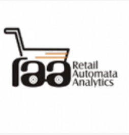
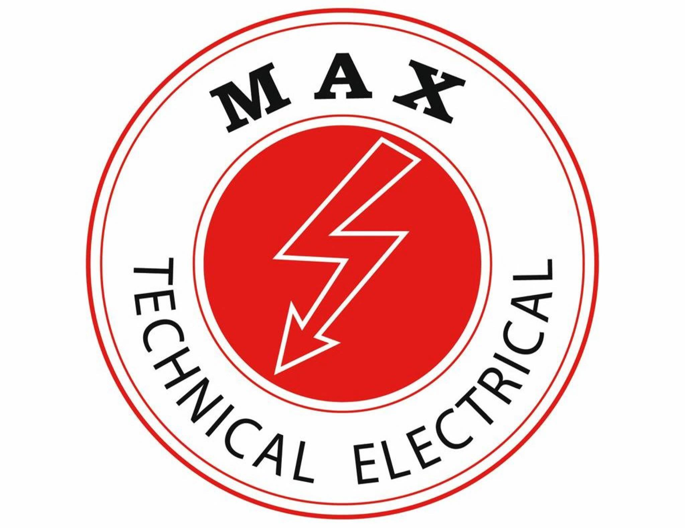

Experience
Eight years, three continents,
one thread.
From automating finance operations in the Gulf, to research at Rutgers, to building a production wealth-intelligence platform in Dubai — every role sharpened the same craft: turning uncertainty into systems.
Quantitative Researcher & Developer — Founder-builder
Dec 2025 – PresentAkeyra (formerly OperaFO) · Dubai, UAE
- Architected and shipped a 9,500-line production Python platform: 6 portfolio-construction models (Max Sharpe, Min Volatility, Risk Parity, Black-Litterman, Max Diversification, Min CVaR), an interactive efficient-frontier explorer, and walk-forward rebalancing across 60–252-day lookback windows.
- Engineered a regime-aware volatility stack — GARCH(1,1) plus a 3-state HMM (bull, sideways, crisis) — feeding 10,000-path copula–Monte Carlo simulation with antithetic variates and moment matching, producing 7 risk metrics per regime.
- Built an AAOIFI-aligned Sharia screening engine spanning 4 compliance standards and 6 financial-ratio filters, integrated into the optimization pipeline for simultaneous Sharia and ESG filtering across GCC and global universes.
- Implemented multi-currency consolidation across 5 base currencies (AED, USD, SAR, EUR, GBP) with FX-adjusted return attribution and Zakat-aware reporting for mandates spanning DIFC, ADGM, and offshore vehicles.
- Own the full stack end to end: production deployment on a Hetzner VPS (Ubuntu, Nginx, systemd, Certbot SSL, Cloudflare DNS) with per-user authentication, refactored from a monolith into a modular architecture with isolated test surfaces.
Graduate Research Assistant
Jan 2024 – May 2025 Rutgers University · Newark, NJ, USA
Rutgers University · Newark, NJ, USA
- Built a dual-model forecasting pipeline (ARIMA-GARCH vs LSTM) across 20 S&P 500 stocks: 15.2% lower MAE in stable regimes, +10.7% directional accuracy in volatile ones.
- Deployed forecasts into a $1M simulated DJIA portfolio rebalanced weekly with transaction costs — Sharpe 1.47, +7.93% return, 310 bps drawdown reduction via HRP and Mean-CVaR optimization.
- Integrated macro filters (CPI, NFP, FOMC) into rebalancing logic, avoiding 75% of volatility shocks; tightened frontier confidence bands by 38.6% and improved weight consistency by 33.2%.
- Packaged the codebase as a reproducible research template (cookiecutter, Make, conda) with data-lineage logs supporting auditability.
Financial Analyst, Pricing
Aug 2022 – Jul 2023Go5 Incorporation · India
- Deployed an XGBoost + logistic-regression demand-forecasting stack — 28.4% accuracy uplift, 12% less excess inventory.
- Built scenario models across three economic outlooks, improving margin forecasts by 6% and accelerating break-even by 2 months for two SKUs.
- Developed a drift-scoring algorithm monitoring 5+ predictive models, cutting drift-triggered misclassifications by 17%; A/B pricing pilots delivered a 3.4% conversion lift.
Process Analyst, Finance
Mar 2021 – Jul 2022 Americana (Kuwait Food Company) · UAE
Americana (Kuwait Food Company) · UAE
- Automated invoice processing and reconciliation with UiPath and VBA bots — 40% less manual processing, closings accelerated by 3 business days across all GCC branches.
- Built liquidity-exposure and vendor-aging dashboards with counterparty risk flags, lowering overdue payables by 18%.
- Processed $3M+ in monthly settlements, reconciling vendor statements and resolving GCC VAT discrepancies; redesigned SAP BODS migration templates across two ERP systems.
Data Analytics Intern
Aug 2020 – Oct 2020 JPMorgan Chase & Co. · USA
JPMorgan Chase & Co. · USA
- Built a Python dashboard visualizing 5Y+ rolling stock-correlation matrices, flagging under- and over-valued equities for trading teams.
- Scraped and structured 10,000+ company profiles via RPA, boosting research efficiency by 52%; shipped a reusable Python library with unit tests and CI.
Quant Automation Intern
Dec 2019 – Jan 2020
Retail Automata Analytics · USA- Automated product-insight workflows with RPA and logistic regression, processing 12,000+ listings and reducing manual curation by 90%.
Fundraising & Analytics Intern
Aug 2019 – Sep 2019 Humanity Welfare Council · India
Humanity Welfare Council · India
- Led donor analytics with clustering and dashboards, improving engagement conversion by 23%.
Network Analytics Intern
Jun 2019 – Jul 2019 Nepal Telecom · Nepal
Nepal Telecom · Nepal
- Analyzed GSM service quality and churn; benchmarked provider performance and proposed a tower-relocation plan from z-score metrics.
Systems Intern
May 2018 – Jul 2018
Max Elect · UAE- Assisted in design and installation of low-voltage switchgear, capacitor banks, and SCADA/PLC panels; produced AutoCAD schematics and QHSE-compliant documentation.